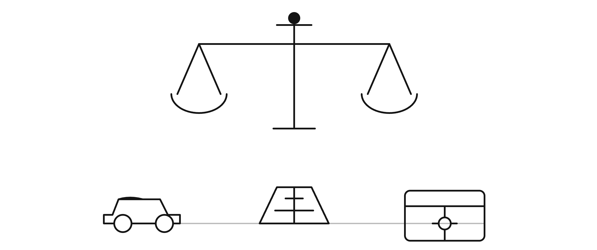
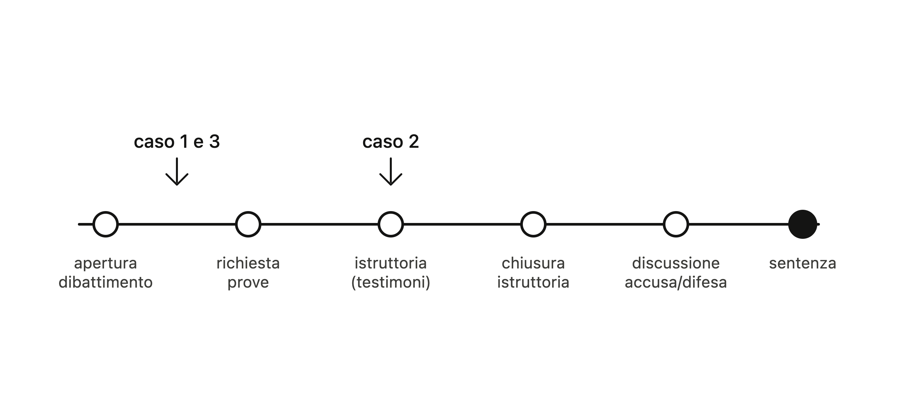
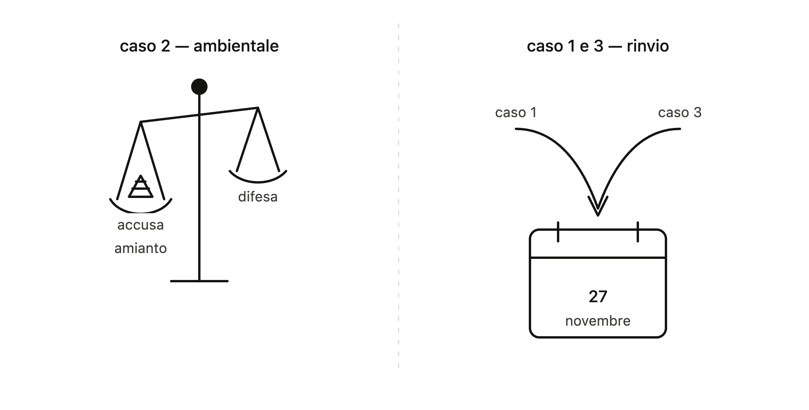
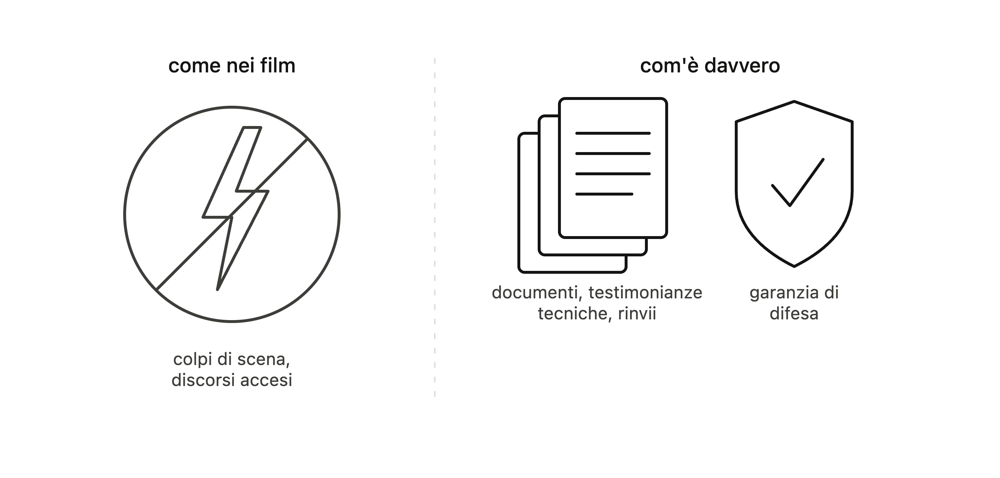

Progetto: "Il Processo Penale - Educazione alla Legalità"
Riflessione critica sull'esperienza
I casi discussi
Nell'udienza si sono discussi tre casi. Nel primo gli imputati erano accusati di mancata esecuzione di un provvedimento del giudice (art. 388 CP): non avevano consegnato un'auto, un'Audi, sottoposta a pignoramento entro i 10 giorni previsti. La pena prevista è la reclusione fino a 3 anni o una multa da 103 a 1032 €.
Nel secondo caso l'imputato era accusato di gestione di rifiuti non autorizzata (art. 256 D.Lgs. 152/2006), per aver creato una discarica abusiva di materiali da costruzione in località Rustico, a Polverigi; la pena prevista è l'arresto da 3 mesi a 1 anno oppure un'ammenda da 2600 a 26000 €.
Nel terzo caso l'imputato era accusato di frode informatica (art. 640 ter CP), per essersi finto agente di banca e aver fatto accreditare 2450 € su una carta Intesa San Paolo; la pena prevista è da 6 mesi a 3 anni e una multa da 50 a 516 €.

A che punto del processo si colloca l'udienza
Tutte e tre le udienze si collocano nella fase del dibattimento, cioè quella in cui la prova si forma davanti al giudice. Nel primo e nel terzo caso si era ancora alla fase iniziale (apertura del dibattimento e richiesta delle prove), mentre nel secondo l'istruttoria era già avviata, con l'ascolto dei testimoni. Il processo proseguirà nelle udienze successive con l'ascolto dei testi rimanenti, la produzione dei documenti, la chiusura dell'istruttoria e infine la discussione tra accusa e difesa, fino alla sentenza.

Il caso ambientale e i rinvii del 1° e 3° caso
Nel secondo caso (reato ambientale) i testimoni dell'accusa mi sono sembrati più convincenti. Il maresciallo del NOE, il direttore dell'ARPAM e il tecnico che ha effettuato il campionamento hanno tutti confermato la presenza di amianto, un rifiuto classificato come pericoloso, sul terreno. La difesa sosteneva invece che la colpa fosse del vicino, ma questa tesi è risultata debole: nella capanna del vicino non era stato trovato materiale Ethernit, e il documento prodotto dalla difesa (una richiesta di bonifica) era del 2024, quindi successivo all'episodio del 2023. Inoltre l'imputato in quel periodo era stato temporaneamente inabilitato a svolgere quell'attività. Se fossi stato io il giudice avrei dato ragione all'accusa, basandomi sulle analisi di laboratorio che hanno provato la presenza di amianto e sul fatto che le prove della difesa non reggevano dal punto di vista temporale.
Nel primo e nel terzo caso, invece, il giudice non ha potuto decidere subito: nel primo perché sia la persona offesa che l'imputato erano assenti e i difensori non hanno accettato di usare gli atti della querela al posto delle testimonianze, così l'udienza è stata rinviata al 27 novembre; nel terzo perché si era solo all'apertura del dibattimento e mancavano ancora l'ascolto dei testi e la produzione dei documenti, anche qui con rinvio al 27 novembre.

Cosa mi ha colpito di più
Quello che mi ha colpito di più è stato rendermi conto di quanto un processo reale sia diverso da come lo si immagina guardando film o serie tv. Non ci sono colpi di scena o discorsi accesi, ma una procedura ordinata e fatta soprattutto di rinvii, documenti e testimonianze tecniche.
Mi ha fatto riflettere in particolare la spiegazione del giudice sui riti speciali, come il rito abbreviato e il patteggiamento, e sul perché esistano: capire che l'imputato ha sempre la possibilità di difendersi in dibattimento mi è sembrata una garanzia importante.

Regole e cittadinanza consapevole
Questa esperienza mi ha fatto riflettere sul legame tra il rispetto delle regole e l'essere cittadini consapevoli. Vedere come funziona davvero un processo mi ha fatto capire che le regole non servono solo a punire chi sbaglia, ma anche a garantire che ognuno venga giudicato in modo equo, con la possibilità di difendersi. Essere cittadini consapevoli significa proprio questo: capire il senso delle regole e rispettarle non per paura della pena, ma perché sono ciò che permette a una comunità di convivere in modo giusto.